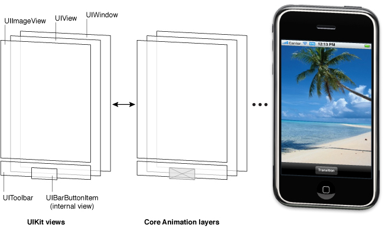
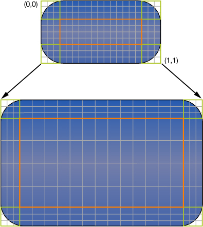
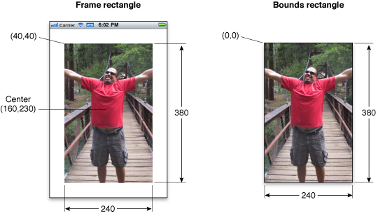

记录关于学习过的 iOS 文档
[TOC]
视图和窗口架构
视图和窗口呈现应用程序的界面和处理界面的交互。UIKit 和其他系统框架提供若干个视图供你做少许修改或不做修改直接使用。当你想呈现与标准视图不一样的内容时也可以自定义视图。
无论你是使用系统视图或自定义视图，你都需要清楚提供基础架构的 UIView 和 UIWindows 类。这些类提供精密的设施管理布局和呈现视图。明白这些设施如何工作是很重要的，当你的应用程序发生变更时可以确保你的视图有适当行为。
视图基础架构
大多数你想显示的事情都在视图对象上完成－UIView 类的一个实例。视图对象在屏幕上定义了一个矩形范围并处理这个区域的绘制和触摸事件。视图也可以充当其他视图的父视图并调整视图的位置和尺寸。UIView 类的大部分工作是管理这些视图之间的关系，但你也可以自定义你需要的默认行为。
视图与核型动画层关联工作处理视图内容的渲染和动画效果。每一个视图在 UIKit 中被一个层对象备份 (通常是CALayer 类的实例)，它管理视图备份的保存和处理视图相关的动画效果。你大多数操作应该通过 UIView 接口执行。但是，在你需要进一步的控制你的视图的渲染或动画效果行为，你可以通过它的层 (layer) 执行替代操作。
为了明白了视图和层之间的关系，这里有一个帮助示例。图 1-1 表示从应用程序 VIewTransitions 到底层的 Core Animation 层之间的关系。这个应用程序的视图中包含一个窗口 (它也是一个视图),一个包含视图的通用 UIView 对象，一个图像视图，一个显示控制的工具栏，和栏按钮项 (它自己没有视图但可以管理视图内部)。（实际的样本应用程序 VIewTransitions 包含用作实现过渡效果的额外的图像视图。为简单起见，并且因为这个视图通常是隐藏的，所以它不在图 1-1 中显示。) 每个视图都有相应的层对象可以通过视图的 layer 属性访问。(因为栏按钮项不是视图，所以你不能直接访问它的层对象。) 这些层对象的背后是核心动画渲染对象并且最终被硬件缓冲区用作管理屏幕上实际的位。
图 1-1 案例应用程序中视图的架构

Core Animation 层的对象的使用对性能有很重要的影响。视图对象实际的绘制代码应该尽量减少调用次数，当代码已被调用后，该结果会被核心动画效果缓存并且尽可能久的使用。重用已渲染的内容消除经常用来更新视图的昂贵的绘制周期。重用这个内容在动画效果的过程是特别重要的，已存在的内容可以被操纵。重用内容比创建新的内容更便宜。
视图层次结构和子视图管理
除了呈现自己的内容，视图也可以作为包含其他视图的容器。当一个视图包含其他视图时，它们形成父与子的关系。它们关系中的子视图被称为 subview 父视图被称为 superview。这种关系的形成会影响应用程序的外观和应用程序的行为。
视觉上看，子视图的内容会覆盖父视图的所有或一部分内容。如果子视图是完全不透明的，那么它会完全掩盖父视图的对应区域。如果子视图是半透明的，那么两个视图会混合显示在屏幕上。每一个父视图都把子视图保存在一个经过排序的数组并且数组中的排序影响着子视图的显示效果。如果两个相邻的子视图重叠了，最后添加的一个 (或被移动到子视图数组结尾位置的) 会出现在另一个上面。
父视图和子视图的关系也影响了几个视图行为。改变父视图的尺寸会影响子视图的尺寸和位置也跟着变化。在改变父视图尺寸时，你可以适当的配置视图控制每一个视图的调整行为。其他方面的更改也会影响到子视图包括隐藏父视图，改变父视图 alpha (透明度),或对父视图的坐标系统应用数学变换。
视图层次结构中的视图排列也决定了应用程序如何响应事件。在指定的视图内发生触摸时，系统发送一个附带触摸信息的事件对象直接在视图中处理。如果该视图不处理指定的触摸事件，它可以将事件对象传递给他的父视图。如果父视图也不做任何处理，会再次传递给它的父视图，在响应者队列层层往上传递。指定的视图也可以把事件对象传递到其中的一个响应者对象，例如视图控制器。如果没事对象处理该事件，它最终会到达应用程序对象，它通常会被抛弃。
更多关于如何创建视图层次结构的信息，见 Cretating and Managing a View Hierarchy。
视图的绘制周期
UIView 类根据按需求绘制模型呈现内容。当视图第一次在屏幕上显示时，系统会绘制它的内容。然后系统会截取内容的快照并且使用快照作为视图的可见外观。如果你永远不改变视图的内容，那么视图的绘制代码也许永远不会再被调用。快照图像会在大多数涉及到视图的操作中重用。如果你更改了内容，你需要通知系统该视图已更改。这个视图会被重新绘制处理并且会截取新结果的快照。
当你的视图的内容更改了，你不用直接重绘这些更改。而应该使用 setNeedsDisplay 或 setNeedsDisplayInRect: 方法使视图无效。这些方法告诉系统视图的内容已更改并且需要在下一次进行重绘。系统在初始化和绘制操作之前会等待直到当前运行循环结束。这个延迟给你机会使多个视图无效，一次性从你的层次结构中添加或移除视图，隐藏视图，调整视图尺寸，和重新定位视图。所有这些你坐的变更都会同时体现。
注意：更改视图的形状不会自动导致系统重绘视图的内容。视图的 contentMode 决定如何应对视图形状的改变。大多数内容模式会在视图的边界内伸展或重新定位已有的快照而不会创建新的一个。更多关于在绘制周期中内容模式的影响，见 Content Modes。
当开始渲染视图的内容时，实际的绘制处理变化取决于视图和它的配置信息。系统视图通常实现私有的绘制方法渲染它们的内容。这些相同的系统视图通常提供接口让你可以用来配置视图实际外观。对于自定义的 UIView 的子类，通常重写视图的 drawRect: 方法并使用这个方法绘制你的视图的内容。这里也有其他方式提供视图内容，例如直接设置底层 (underlying layer) 的内容，但重写 drawRect: 方法是最常用的技术。
更多关于如何绘制自定义视图的内容，见 Implementing Your Drawing Code。
内容模式
每个视图都有一个控制视图在响应视图的形状更改时如何循环利用它的快照内容和是否循环利用所有内容的内容模式。当一个视图第一次显示后，它正常的渲染内容并且把结果保存在一个基本位图中。之后，视图的形状更改不会总是导致位图重建。而是由 contentMode 属性值判断位图是否应该拉伸以适应新的边界或简单的固定钉视图的一个角落或边缘。
每当你做了以下的事时会引发内容模式的应用
- 更改了框架或边界矩形的宽或高。
- 分配了包含缩放系数的 transform 给视图的 transform 属性。
默认情况下，contentMode 属性为大多数视图设置成 UIViewContentModeScaleToFill 值，它使视图的内容拉伸以适应新的框架尺寸。图 1-2 说明了一些可用的内容模式以及它们的效果。如你在图中看见的，不是所有内容模式的结果都把视图的边界填充完整，有的会使视图内容变形。
图 1-2 内容模式的对比
内容模式能很好的循环使用你的视图内容，不过当你想在你的自定义视图中以自己的方式拉伸和调整尺寸操作也可以设置内容模式为 UIViewContentModeRedraw 值。设置这个值之后会强制系统调用你的视图的 drawRect: 方法响应图形变化。一般来说，你应该尽量避免使用这个值，并且不要在标准系统视图中使用这个值。
更多关于可用的视图模式的信息，见 UIView Class Reference。
拉伸视图
你可以划定视图的一部分作为可伸展的当视图的尺寸变更时只有划定了可伸展的部分内容会受影响。通常会对按钮或者其他定义了一部分重复图案的视图使用可伸展区域。你额可以指定可伸展区域沿着视图的一条或所有轴线伸展。当然，当沿着两个轴线伸展视图时，视图的边界必须定义重复图案避免造成失真。图 1-3 给出了视图失真的表现。每个视图的有颜色的原始像素点被复制填充到大视图的相应区域。
图 1-3 伸展按钮的背景

你可以通过使用 contentStretch 属性指定视图的可伸缩区域。这个属性接受值是标准化的范围是 0.0 到 1.0. 的矩形。当伸展视图时，系统通过视图的当前边界和拉伸系数乘以这些标准化的值决定它的像素或需要被拉伸的像素。标准化值的使用缓解了视图边界变更时都更新 contentStretch 的需要。
视图的内容模式也在参与到决定视图的可伸展区域如何使用。可伸展区域只有在内容模式会导致视图的内容被拉伸时才会用到。这意味着可伸展区域只支持值为 UIViewContentModeScaleToFill，UIViewContentModeScaleAspectFit，和 UIViewContentModeScaleAspectFill 的内容模式。如果指定的内容模式是内容钉在边缘或角落 (实际上不拉伸内容)，视图会忽略可伸展区域。
注意：contentStretch 属性推荐在为视图的指定背景创建可伸展的 UIImage 对象时使用。可伸展的视图完全在 Core Animation 层处理，它通常会提供更好的性能。
内置的动画效果支持
每个视图背后都有一个层对象的好处之一是你可以轻松的使用动画完成许多视图相关的变更。动画效果是与用户沟通的有效方式在你的应用程序的设计过程中应该优先考虑。许多 UIView 类的属性都是可动画的，就是说，半自动的支持以动画的形式从一个值变到另一个值。为这些可动画的属性执行动画效果，你只需要做：
- 告诉 UIKit 你想执行的动画效果。
- 更改属性的值。
你可以在 UIView 对象上动画的属性：
- frame，用这个动画更改视图的位置和尺寸。
- bounds，使用这个动画更改视图的尺寸。
- center，为视图的位置使用这个动画。
- transform，用来旋转或缩放视图。
- alpha，用来更改视图的透明度。
- backgroundColor，用来更改视图的背景颜色。
- contentStretch，用来更改视图的内容如何伸展
当一组视图过渡到另一组视图时动画效果是非常重要的一个地方。通常，你会使用视图控制器管理你的界面不同部位之间主要的变化相关联的动画效果。例如，涉及从高级别到低级别的信息导航界面，你通常使用导航控制器管理视图之间的转换以显示连续的数据。你也可以使用动画效果创建两组视图之间的转换来替代视图控制器，当标准视图控制器没有产生你想要的效果时你可以使用这种做法。
除了使用 UIKit 类创建动画效果，你也可以使用 Core Animation 层创建动画效果。更低的层次给你更进一步控制动画效果的时间和属性。
关于如何执行基于视图的动画效果细节，见 Animations。
更多关于使用 Core Animation 创建动画效果的信息，见 Core Animation Programming Guide 和 Core Animation Cookbook。
视图形状和坐标系统
UIKit 的默认坐标系统的原点在左上角和有一个从原点开始向下和向右伸展的坐标轴。坐标值使用浮点数代表，它让内容精确的定位和布局而不关心底层的屏幕分辨率。图 1-4 显示在屏幕中的坐标系统。除了屏幕坐标系统，窗口和视图还定义了它们自己的本地坐标系统允许你相对视图或窗口的原点指定坐标替代相对屏幕的坐标。
图 1-4 UIKit 内坐标系统的方向

因为每个视图和窗口都定义了自己的本地坐标系统，所以你需要注意坐标系统所有给定的时间的效果。每当你在绘制视图时或更改了视图的形状时，你需要相应的对坐标系统做一些事情。在绘制的情况下，需要指定相对于视图自己的坐标系统的坐标。在形状更改的情况下，需要指定相对于父视图的坐标系统的坐标。UIWindow 和 UIView 类都包含帮助你从一个坐标系统转换到另一个坐标系统的方法。
重要提示：一些 iOS 技术定义的默认坐标系统原点和方向与使用 UIKit 时不一样。例如，Core Graphics 和 OpenGL ES 的坐标系统原点在视图或窗口的左下角并且 Y 轴在向上。你的代码必须考虑这些差异并且需要在绘制或创建内容时调整坐标值 (或坐标系统的默认方向)。
Frame,Bounds,和 Center 属性的关系
视图对象使用它的 frame，bounds，和 center 属性追踪它的尺寸和位置：
- frame 属性包含 frame rectangle，它指定视图在父视图的坐标系统中的尺寸和位置。
- bounds 属性包含 bounds rectangle，它指定了在自己的本地坐标系统的视图尺寸 (和内容原点)。
- center 属性包含父视图的坐标系统中视图已知的中心点。
你可以主要在操作当前视图的形状时 使用 center 和 frame 属性。例如，可以使用这些属性构建你的视图层次结构或在运行时修改视图的位置或尺寸。如果你只需要更改视图的位置 (而不是它的尺寸)，center 属性是首选。 center 属性的值总是有效的，即使缩放或旋转系数已经被添加到视图的 transform。而 frame 属性的值就确定了，如果视图的 transform 不是恒等转换则需要考虑值无效的可能。
你可以主要在绘制时使用 bounds 属性 。边界矩形被表示在视图自己的本地坐标系统中。矩形的默认原点是 (0,0) ，它的尺寸和框架矩形的尺寸相匹配。任何你在这个矩形内绘制的内容都是视图可见内容的一部分。如果你更改了边界矩形的原点，任何在新的矩形内绘制的内容都会变成视图可见内容的一部分。
图 1-5 说明了框架矩形和边界矩形之间的关系。在图中，图像视图左上角位于父视图坐标系统的点 (40.40) 位置并且矩形的尺寸为 240 乘 380 点。在边界矩形中，原点是 (0,0) 和矩形的尺寸同样是 240 乘 380 点。
图 1-5 视图的框架和边界之间的关系

尽管你可以独立的更改 frame，bounds，和 center 属性，但改变其中一个属性会对其他造成影响：
- 当你设置了 frame 属性是，bounds 属性内的尺寸值会相应的适配框架矩形的尺寸值。在 center 属性内的值同样改更改适配新的框架矩形的中心点。
- 当你设置了 center 属性，frame 内的原点值跟着改变。
当你设置了 bounds 属性的尺寸，在 frame 属性内的尺寸值同样改变适配新的边界矩形的尺寸。
默认情况下，视图的框架不会被它的父视图的框架剪切。因此，任何位于父视图的框架外部的子视图都是以其整体呈现。你可以改变这个行为，通过设置父视图的 clipsToBounds 属性为 YES。无论子视图可见部分是否被剪切，触摸事件始终遵从目标的父视图的边界矩形。换句话说，在父视图边界矩形外部的那部分视图发生的触摸事件不会发出给视图。
坐标系统转换
坐标系统转换提供快速和简单的方式修改视图 (或它的内容)。affine transform 是一个数学矩阵指定了一个坐标系统中的点如何映射到另一个坐标系统中。你可以应用仿射转换更改整个视图的尺寸，位置，或与父视图相对的轴方向。你也可以绘制代码中对单个渲染内容使用仿射转换执行相同类型的操作。具体如何应用仿射转换需要依赖上下文：
- 要修改整个视图，修改视图的 transform 属性内的仿射转换。
- 要修改视图的 drawRect: 方法的指定内容，修改与活动的图像上下文相关联的仿射转换。
当你想实现动画效果时通常都是修改视图的 transform 属性。例如，你可以使用这个属性创建一个环绕视图中心点旋转的动画效果。不要使用这个属性对视图做永久的变更，例如修改它在父视图坐标空间的位置和尺寸。要进行这种类型的变更，你应该修改视图的框架矩形。
注意：在修改视图的 transform 属性时，所有转换效果都是相对于视图的中心点执行。
在你的视图的 drawRect: 方法中，可以使用仿射转换定位和定向你计划绘制的项。相对于把对象固定到视图的某个位置，它更简单的相对一个固定点来创建每一个对象，通常是 (0,0)，然后在绘制之前立即使用转换来定位对象。如果要改变对象在视图的定位，你所需要做的就是修改转换 (transform)，相比在新位置重新创建视图它更快更便宜。你可以使用 CGContextGetCTM 取回与仿射转换相关联的图像上下文并在绘制期间的使用相关的 Core Graphics 函数设置或修改转换 (transform)。
current transformation matrix (CTM) 是仿射转换的使用。当操作整个视图的形状时，CTM 被保存在视图的 transform 属性的仿射转换。在你的 drawRect: 方法内部，CTM 是与活动的图形上下文相关联的仿射转换。
每个子视图的坐标系统建立在它的祖先坐标系统之上。因此当你修改视图的 transform 属性时，变更会影响视图和它的所有子视图。因此，这些变更会影响视图在屏幕上最终的渲染。因为每一个视图绘制它的内容布局它的子视图是相对自己的边界，它可以在绘制和布局时忽略父视图的转换。
图 1-6 演示两种不同的旋转系数结合使用时呈现的外观。在视图的 drawRect: 方法的内部，施加 45 度的旋转系数给矩形结果矩形发生 45 度的旋转。另一个的施加 45 度旋系数给视图然后矩形发生 90 度旋转。矩形的相对于视图仍然是 45 度旋转，但视图旋转使它出现更多的旋转。
图 1-6 旋转视图和它的内容

重要说明：如果视图的 transform 属性不是恒等转换，那么视图的 frame 属性的值是 undefined 并被忽略。当正在应用转换到视图时，你必须使用视图的 bounds 和 center 属性获取视图的尺寸和定位。任何子视图的框架矩形始终有效的因为它们是相对于视图的边界。
关于在运行时修改你的视图的 transform 属性信息，见 Translating,Scaling,and Rotating Views。
关于如何在绘制期间转换内容定位的信息，见 Drawing and Printing Guide for iOS。
Point 与 Pixel
在 iOS 中，所有的坐标值和距离被指定使用浮点作为单位的值简称为 point。不同设备之间可测量的点的尺寸都不同而且差异巨大。这章主要明白 “点” 提供了绘制时用于参考的边框。
表 1-1 列出了不同的 iOS 设备纵向的屏幕尺寸 (使用点测量)，左边是宽度尺寸，然后是屏幕的高度尺寸。只要你在这些屏幕尺寸内设计你的界面，你的视图就会在相应类型的设备上正确显示。
表 1-1 iOS 设备的屏幕尺寸
| 设备 | 屏幕尺寸 (点) |
|---|---|
| 4 英寸 Retina 显示屏的 iPhone 和 iPod touch | 320* 568 |
| 其他的 iPhone 和 iPod touch 设备 | 320*480 |
| iPad | 768*1024 |
基于点的测量系统被用在每种类型的设备中定义，它也被称作用户坐标空间 (user coordinate space)。这是一个标准的坐标系统几乎你的所有代码都会使用。例如，当你操纵视图的形状或调用 Core Graphics 函数绘制视图的内容时会使用点和用户坐标空间。尽管有时候用户坐标空间的点会直接映射到设备屏幕的像素点，但你可千万别认为他们是相同的。你应该记住下面一点：
点不需要对应屏幕上的像素点
在设备级别，所有视图中指定的坐标的点都必须转换成某个像素点。从用户坐标空间的点映射到设备坐标空间的像素点的操作通常由系统处理。UIKit 和 Core Graphics 主要使用基于矢量的绘制模型，所有的坐标值都通过点指定。因此如果你使用 Core Graphics 绘制曲线，你只需要指定实际的曲线值，而不用在意底层屏幕的分辨率。
当你需要与图像或其他基于像素的技术如 OpenGL ES 工作时，iOS 提供了管理这些像素点的帮助。静态文件会作为资源文件保存在你的应用程序包，iOS 对图像指定不同的分辨率，并为当前屏幕分辩率加载最适合的图像。视图也提供了当前的缩放系数信息因此你可以调整基于像素的绘制代码通过手动适配高分辨率屏幕。处理不同分辨率屏幕的基于像素的内容的技术在 Drawing and Printing Guide for iOS 中的 Supporting High-Resolution Screens In Views 描述。
视图的运行时交互模型
在用户与你的界面交互时，或使用编程方式在代码中做一些变更时，UIKit 内部使用复杂的事件任务序列处理这些交互。在序列中特定的点，UIKit 会呼叫你的视图类并给它们机会代表应用程序响应。弄明白这些呼叫的点对于弄明白你的视图是在哪融入到系统很重要。图 1-7 指示了从用户触摸屏幕开始到图像系统完成响应并更新屏幕内容结束的基本事件序列。同样的事件序列也在编程方式的执行初始化动作后发生。
图 1-7 UIKit 与你的视图对象交互

下面是图 1-7 的步骤分解，进一步的解释每一个阶段发生了什么和如何让应用程序应对响应。
- 用户触摸屏幕。
- 硬件对 UIKit 框架报告触摸事件。
- UIKit 框架把触摸事件打包到 UIEvent 对象中并调度它到相应的视图中。(详细说明 UIKit 如何交出事件到你的视图中，见 Event Handling Guide for iOS。
视图的事件处理代码对事件响应。你的代码可以：
- 更改视图或它的子视图的属性 (frame,bounds,alphs,等等)
- 调用 setNeedsLayout 方法标记需要更新布局的视图 (或子视图)。
- 调用 setNeedDisplay 或 setNeedsDisplayInRect: 方法标记需要重绘的视图 (或子视图)。
通知控制器关于一些数据块的更改。
当然，是由你来决定视图应该做哪些事情和哪些方法应该调用。
如果视图需要修改形状，UIKit 根据以下规则更新它的子视图：
a. 如果视图已配置自动调整大小的规则，UIKit 则根据这个规则调整每一个视图。更多关于如何使用自动调整大小的规则的信息，见 Handling Layout Changes Automatically Using Autoresizing Rules。
b. 如果视图实现了 layoutSubviews 方法，UIKit 会调用它。
你可以在自定义视图中重写这个方法并使用它调整任意子视图的位置和尺寸。例如，一个巨大的可滚动视图是由很多个子视图组成的而不是创建一个巨大的视图，那样对内存使用不健康。在这个方法的实现过程中，视图将会在屏幕外的子视图隐藏或者重新定位它们并使用它们绘制新的内容。在处理过程时，视图的布局代码可以标记需要重绘的视图使它无效 (invalidate)。<br/>如果视图已经被标记为需要重绘，UIKit会要求视图重绘它自己。
如果自定义视图明确定义了 drawRect: 方法，UIKit 会调用这个方法。这个方法的实现过程应该尽可能快的重绘视图的指定区域并且不要做其他事情。不要在这做额外的视图布局变更和更改你的应用程序数据模型。这个方法的目的是更新你的视图的可见内容。
标准系统视图通常不会实现 drawRect: 方法但会在特定时间管理它们的绘制。
- 视图更新后会与应用程序的可见内容合并然后发送到图形硬件显示。
- 图形硬件传输已渲染的内容到屏幕。
注意：前面的更新模型主要用于使用标准的系统视图和绘制技术的应用程序。使用 OpenGL ES 绘制的应用程序通常配置有一个单独的全屏幕视图并且直接在相关的 OpenGL ES 图像上下文中绘制。在这个案例中，视图仍然需要处理触摸事件，但因为它是全屏幕的，所以它不需要布局子视图。更多关于使用 OpenGL ES 的信息，见 OpenGL ES Programming Guide for iOS。
在前面的步骤集合中，自定义视图主要整合点是：
- 事件处理方法：
- layoutSubviews 方法
- drawRect: 方法
这些是视图的最常用的重写方法也许不需要全部都重写。如果你使用手势检测处理事件，你不需要重写事件处理的方法。同样，如果你的视图不包含子视图或不改变尺寸，也就没有重写 layoutSubviews 的理由。最后，需要在运行时更改视图的内容并且使用的技术是原生的例如 UIKit 或 Core Graphics 绘制时需要重写 drawRect: 方法。
同样重要是记住这些方法是虽然是主要整合点但不是唯一的。UIView 类还有几个方法也被设计为子类重写点。你应该在 UIView Class Reference 查看这个方法的描述，看看哪些方法适合在你的自定义实现过程中重写。
有效的视图使用提示
自定义视图在你需要绘制一些标准系统视图无法提供的内容时很有用，但你要确保你的视图有足够的性能。UIKit 做了所有它能做的优化视图相关行为并且帮助你的自定义视图实现良好的性能。然而，你可以考虑下面提示帮助 UIKit 提升你的性能。
重要提示：在优化你的代码之前，你应该收集你当前性能的数据。测量当前性能让你确定真正的问题是否出现在这里，如果是，那将有一个底线能让你对照优化后的性能。
视图不总是有相应的视图控制器
在你的应用程序中的单个视图和视图控制器之间很少有一对一的关系。视图控制器的工作是管理视图层次结构，通常由一个以上的视图被用来实现一些一体式功能。对于 iPhone 应用程序，每个视图层次结构通常填满整个屏幕，但对于 iPad 应用程序的视图层次结构可能只填充屏幕的一部分。
作为你设计的用户界面，需要重点考虑视图控制器所扮演的角色。视图控制器提供很多重要的行为，例如协调在屏幕上呈现的视图，协调从屏幕上去除这些视图，响应低内存警告时的释放内存，和响应界面方向变更时的旋转视图。忽视这些行为会导致应用程序出现未知的错误的行为。
更多关于视图控制器和它在应用程序中扮演的角色的信息，见 View Controller Programming Guide for iOS。
尽量少使用自定义绘制
尽管自定义绘制有时候是必须的，但应该尽可能避免。已有的系统视图类不能提供你想要的外观或你需要的能力时才使用自定义绘制。当你的内容可以和已有的视图组合完成组装时，你最好组合这些视图到一个自定义视图层次结构中。
利用内容模式的优点
内容模式最大化减少你的视图重绘所花费的时间。默认的，视图的内容模式使用 UIViewContentModeScaleToFill 值，它会伸缩视图已有的内容以适应视图的框架矩形。你可以根据需要变更模式以不同的方式调整内容，但你应该避免使用 UIViewContentModeRedraw 内容模式如果你能。无论内容模式是哪种效果，你都可以调用 setNeedsDisplay 或 setNeedsDisplayInRect: 强迫你的视图重绘它的内容。
只要有可能的声明视图为不透明
UIKit 通过每个视图的 opaque 属性决定视图是否可以优化合成操作。为自定义视图设置这个属性的值为 YES 会告诉 UIKit 不需要在视图背后渲染任何显示内容。更少的渲染内容可以使你的绘制代码更高效，这是被鼓励的行为。当然，如果你设置 opaque 属性为 YES，视图的边界矩形必须完全填满不透明的内容。
调整你的视图在滚动时的绘制行为
滚动条滚动时会导致短时间内产生大量的视图更新。如果你的绘制代码没有适当的应对，视图在滚动时的性能将会迟滞。每时每刻都尝试确保视图内容是原始的做法，应该考虑在滚动操作开始时更改你的视图行为。例如，你可以暂时降低内容渲染的质量或滚动过程中更改内容模式。当滚动停止后，你可以回到视图之前的状态和按需要更新内容。
不要通过嵌入子视图自定义控件
尽管技术上能实现添加子视图到标准系统控件中－从 UIControl 继承的对象－你应该永远不要使用这种方式自定义它们。控件提供了有清晰的功能和良好文档的控件类的接口来支持自定义控件。例如，UIButtion 类包含为按钮设置标题和背景图像的方法。使用已定义的自定义点意味着你的代码总是能正确工作。而绕过这些方法，通过嵌入自定义图像或标签到按钮中，会导致你的应用程序发生错误行为或未来按钮的实现发生更改时导致代码失效。
系列文章
iOS 翻译 《View Programming Guide for iOS：Introduction》
iOS 翻译 《View Programming Guide for iOS：View and Window Architecture》
iOS 翻译 《View Programming Guide for iOS：Windows》